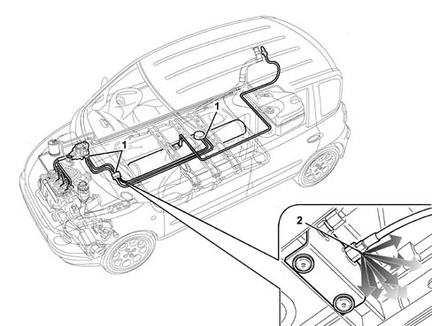

1043A04 gpl system and pipes check for leaks
- Path
- Procedures > 10 ENGINE UNIT > 1043 LGP TANK AND PIPES > 1043A gpl tank > 1043A04 gpl system and pipes check for leaks
- Kind
- repair procedure (removal / refitting; the operation number is the code)
- Applies to
- engines: 1.6 16v; all production periods; only with equipment: GPOWER
- Interactive page
- https://sloeber94.github.io/elrnDB-fMltpl/en/#/2891491
Applies to: engines: 1.6 16v; all production periods; only with equipment: GPOWER and Euro 3
After any maintenance or replacement operation which has involved adjusting the connectors or moving the pressurized components, a search for LPG leaks should be carried out proceeding as described below.
Reconnect the 7.5A protective fuse for the solenoid valves and the LPG pump, disconnected when the LPG pipes were drained.
Road test the vehicle by driving for about 5-10 km in the LPG operating mode.
Return the vehicle to the workshop and place it on a lift.
1. Using an electronic detector, search for any escaping gas checking each component and each individual pipe in the LPG system along the bodyshell and in the engine compartment.
If no leaks are found using the electronic detector, then the vehicle has passed the test and may leave the workshop.
2. If this is not the case, identify the section of the system where the leak is coming from using the electronic detector, then apply the special foam to the components in order to identify the exact point where the gas is escaping.
Repair the component involved, checking the cause of the leak (connectors not properly tightened, seals not replaced, defects in the part).
Road test the vehicle again and repeat the procedure described for checking for leaks until the problem is completely resolved.

Topics that link to this page (7)
- 1043A06 gpl tank complete with submerged fuel tank and valve unit r r
- 1043A08 lpg tank check seal
- 1043A30 gpl filler fitting r r
- 1043A34 filler pipe from fitting to gpl tank r r
- 1043B20 intermediate fitting of delivery or return pipes between gpl resevior and pressure regulator r r
- 1043B42 pressure regulaton for gpl supply complete with delivery and return lines from intermediate connector r r
- 1057B66 gpl injector unit with connection pipes to pressure regulator r r